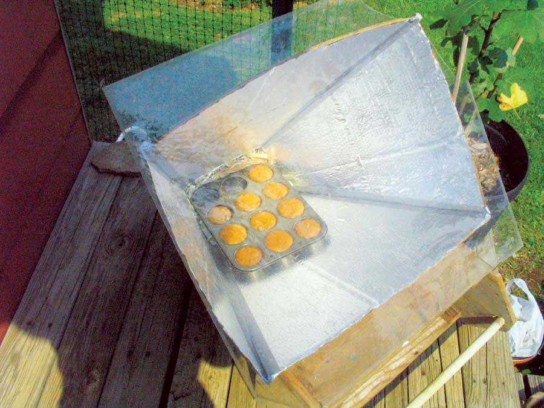

When the sun is shining, we like to use our solar oven for cooking and baking. The cost of materials for our solar cooker was about $5, and it took about an hour to construct. All you need is some cardboard, duct tape, glue and aluminum foil. You can find the instructions to Build Your Own Solar Oven at re-energy.ca.
Cooking time is a little longer than in the kitchen oven. We usually bake a casserole-type dinner in a brown glass casserole dish.
For an easy, award-winning and innovative solar cooker design, check out the Easy-to-make Cardboard Solar Cooker. - MOTHER
|
 SUSAN & JIM BROWN Try baking muffins and other goodies in this easy-to-make solar oven. |
|
|